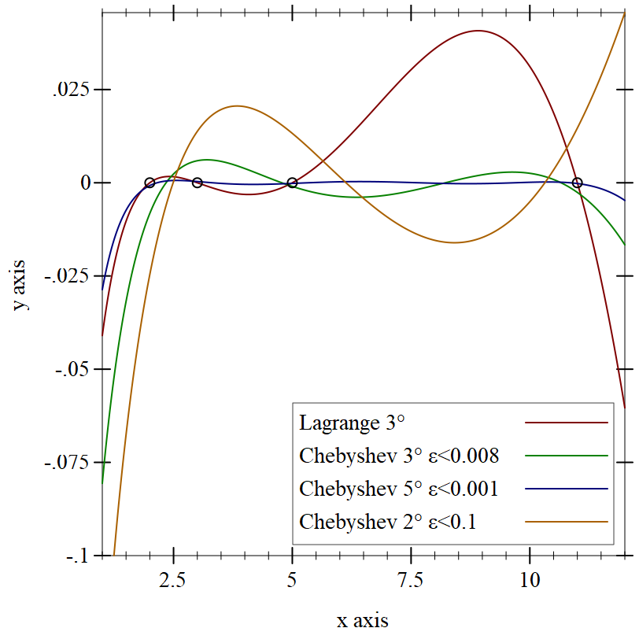

5 Polynomials
| (require sicm/poly) | package: rktsicm |
sicm/poly provides functions that work together with or specializes polynomials as defined in sicm/simplify/pcf. Although pcfs can have more than 1 variable, the functions below work on only 1 variable.
procedure
((polynomial-function p) x) → pcf?
p : pcf? x : number?
procedure
(roots->poly roots) → pcf?
roots : (listof number?)
procedure
(poly-domain->canonical p a b) → pcf?
p : pcf? a : real? b : real?
procedure
(poly-domain->general p a b) → pcf?
p : pcf? a : real? b : real?
procedure
(poly->roots p) → (listof number?)
p : pcf?
5.1 Special polynomials
procedure
(legendre-polynomial n) → pcf?
n : nonnegative-integer?
procedure
(chebyshev-polynomial n) → pcf?
n : nonnegative-integer?
5.2 Interpolating polynomials
procedure
((make-hermite-interpolator n) a b) → pcf?
n : nonnegative-integer? a : (listof number? number? ...) b : (listof number? number? ...)
procedure
(make-cubic-interpolant ax ay ady bx by bdy) → pcf?
ax : number? ay : number? ady : number? bx : number? by : number? bdy : number?
procedure
(make-quintic-interpolant ax ay ady addy bx by bdy bddy) → pcf? ax : number? ay : number? ady : number? addy : number? bx : number? by : number? bdy : number? bddy : number?
procedure
(lagrange-interpolation-function ys xs) → (-> number? number?)
ys : (listof number?) xs : (listof number?)
procedure
(Lagrange-interpolation-function ys xs) → (-> any? any?)
ys : (listof any?) xs : (listof any?)
procedure
(lagrange ys xs) → expression?
ys : (listof any?) xs : (listof any?)
procedure
(make-interp-poly ys xs) → pcf?
ys : (listof any?) xs : (listof any?)
procedure
(get-poly-and-errors fct low high order)
→ (List pcf? positive-integer? positive-integer?) fct : (-> real? real?) low : real? high : real? order : positive-integer?
procedure
(generate-approx-poly fct low high order [eps]) → pcf?
fct : (-> real? real?) low : real? high : real? order : positive-integer? eps : #f = (U #f real?)
> (define fct sqrt) > (define xs '(2 3 5 11)) > (define ys (map fct xs))
> (define (Δ clr lbl P+) (define-values (P eps) (if (pcf? P+) (values P+ #f) (values (car P+) (cadr P+)))) (define F (polynomial-function P)) (function (λ (x) (- (fct x) (F x))) #:color clr #:label (string-append lbl (format " ~a°" (poly:degree P)) (if eps (format " ε<~a" (/ (round (* eps 1000)) 1000)) ""))))
> (plot (list (Δ 1 "Lagrange" (make-interp-poly ys xs)) (Δ 2 "Chebyshev" (get-poly-and-errors fct 2 11 4)) (Δ 3 "Chebyshev" (get-poly-and-errors fct 2 11 6)) (Δ 4 "Chebyshev" (list (generate-approx-poly fct 2 11 8 0.1) 0.1)) (points (map (λ (x) (list x 0)) xs))) #:x-min 1 #:x-max 12 #:y-min -0.1 #:legend-anchor 'bottom-right) 
5.3 Chebyshev expansions
(for/sum ([a (in-list cheb-exp)] [i (in-naturals)]) (* a (chebyshev-polynomial i)))
value
scaled-chebyshev-expansions : (streamof (listof integer?))
value
chebyshev-expansions : (streamof (listof integer?))
procedure
(poly->cheb-exp p) → (listof real?)
p : pcf?
procedure
(cheb-exp->poly cheb-exp) → pcf?
cheb-exp : (listof real?)
procedure
(trim-cheb-exp cheb-exp eps) → (listof real?)
cheb-exp : (listof real?) eps : positive-real?
procedure
(cheb-root-list n) → (listof real?)
n : nonnegative-integer?
procedure
(first-n-cheb-values n x [half?]) → (listof real?)
n : nonnegative-integer? x : real? half? : #f = (U #f 'HALF)
procedure
(cheb-exp-value cheb-exp x) → real?
cheb-exp : (listof real?) x : real?
procedure
(generate-cheb-exp fct low high order) → (listof real?)
fct : (-> real? real?) low : real? high : real? order : nonnegative-integer?
5.4 Piecewise polynomials
procedure
(ppa-make-from-poly low high poly) → ppa
low : real? high : real? poly : pcf?
procedure
(ppa-low-bound ppa) → real?
ppa : ppa
procedure
(ppa-high-bound ppa) → real?
ppa : ppa
procedure
(ppa-body ppa) → ppa-body
ppa : ppa
procedure
(ppa-poly ppa-body) → pcf?
ppa-body : ppa-body
procedure
(ppa-terminal? ppa-body) → boolean?
ppa-body : ppa-body
procedure
(ppa-split? ppa-body) → boolean?
ppa-body : ppa-body
procedure
(ppa-low-side ppa-body) → ppa-body
ppa-body : ppa-body
procedure
(ppa-high-side ppa-body) → ppa-body
ppa-body : ppa-body
procedure
(ppa-max-degree ppa) → nonnegative-integer?
ppa : ppa
procedure
(ppa-size ppa) → nonnegative-integer?
ppa : ppa
procedure
(ppa-adjoin ppa0 ppa1) → ppa
ppa0 : ppa ppa1 : ppa
procedure
(make-ppa fct low high order esp) → ppa
fct : (-> real? real?) low : real? high : real? order : positive-integer? esp : positive-real?
procedure
fct : (-> real? real?) low : real? high : real? order : positive-integer? esp : positive-real?
procedure
(make-smooth-ppa fct low high esp) → ppa
fct : (listof (-> real? real?)) low : real? high : real? esp : positive-real?
procedure
(smooth-ppa-memo fct low high esp) → (-> real? real?)
fct : (listof (-> real? real?)) low : real? high : real? esp : positive-real?